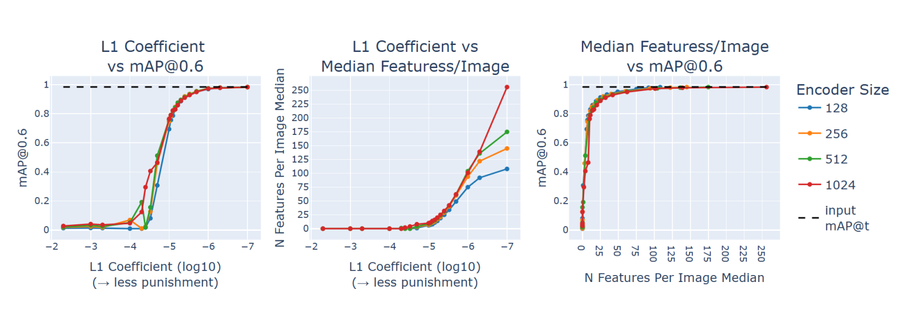

Navigation Welcome to my personal website. You currently find yourself in no man's land. Please refer to the Home page to refer to my personal portfolio website. If you are here for a different reason, please observe the tiles below.
Specific pages
My home page→
This site contains a compilation of my work (research papers, projects, talks, blogs, podcasts, etc.)

Research paper figure→
This page contains an interactable figure for a paper I wrote titled Privacy-Aware Traffic Re-Identification with Interpretable Sparse Autoencoders.

University Course project→
For the course Human Centered Machine Learning, I made a page to listen to some auditory results.